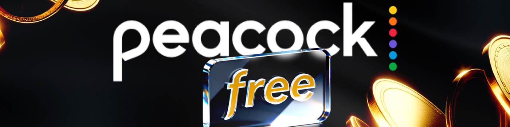
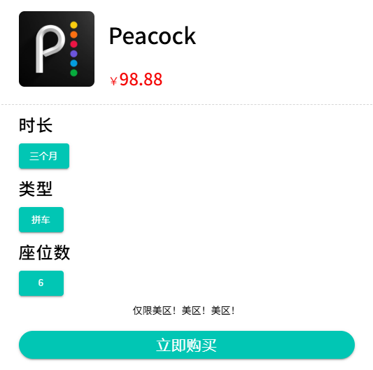
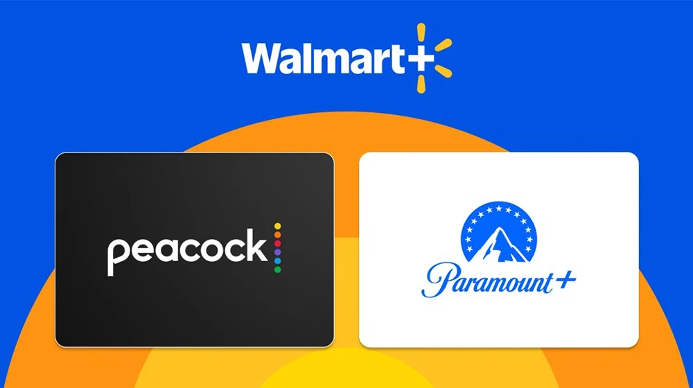
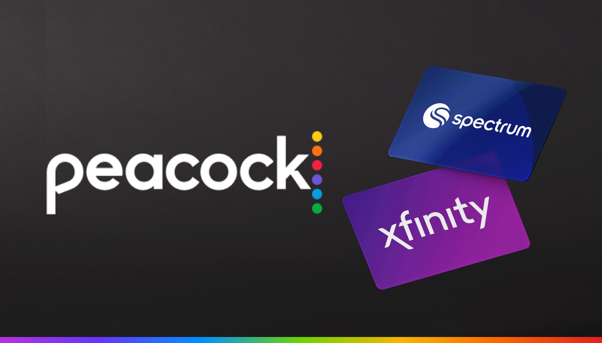
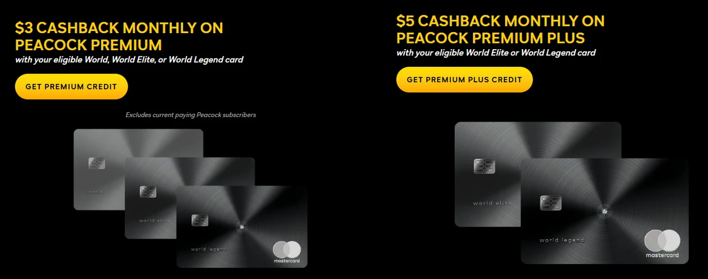
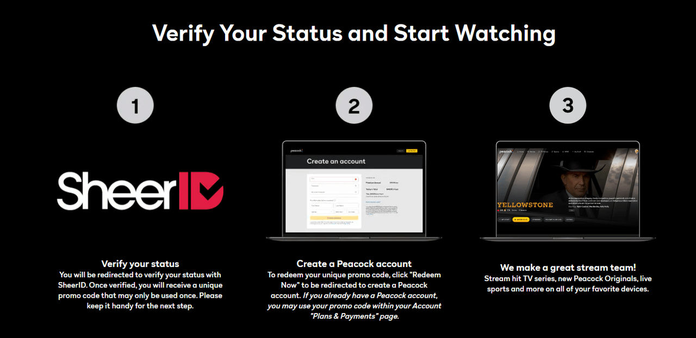

如何在2025年免费获得Peacock TV
Peacock 是 NBCUniversal 旗下的流媒体平台，提供一站式观看美国电视节目、电影、体育赛事和原创内容。作为 Peacock 的粉丝，我经常在这个平台上观看《办公室》、《驯龙高手》、英超联赛以及其他节目。
不过，随着2025-26赛季NBA转播权的加入，Peacock的价格再次上涨，Premium套餐涨至10.99美元/月，Premium Plus套餐则涨至16.99美元/月，对于我们这些享受该服务的用户来说，订阅成本又增加了不少。
如何低价甚至免费获得 Peacock 已成为大家最关心的问题。为了节省订阅费用，同时又能享受完整的观看体验，我找到了几种方法，并整理了 2025 年最安全、最有效的免费方案。这样你就可以轻松享受 Peacock，无需担心价格上涨!
2025 年 Peacock TV 还提供免费试用吗？
Peacock 此前为其付费套餐(包括 Premium 和 Premium Plus)的新用户提供 7 天免费试用，但该服务已于 2021 年 11 月 停止 。
此外，Peacock 的免费计划也于 2023 年初 停止 接受新用户。现在，如果你想在 Peacock 上观看内容，你只能从付费计划中进行选择。
Peacock TV 提供哪些订阅等级？
Peacock 提供三个订阅级别： Select (每月 7.99 美元) 价格最低，可观看 NBC 和 Bravo 的节目，但不提供原创节目，且有广告。Premium (每月 10.99 美元)可解锁所有内容，包括原创节目、环球影业电影、梦工厂动画以及英超联赛和 WWE 等体育赛事，且广告较少。Premium Plus (每月 16.99 美元)则去除所有广告，并提供离线观看功能，带来最佳体验。
根据我们对Peacock TV 的评测，Premium Plus 提供了最佳的价值和体验。虽然 Peacock 已终止免费试用和免费套餐，但你仍然可以通过共享平台、促销活动、套餐或第三方优惠获得免费或折扣访问权限。
如何免费获取 Peacock TV(概述)
- 通过 环球巴士 免费获取 Peacock
- 你的 Walmart+ 会员可免费获得 Peacock
- 通过运营商福利获得 Peacock
- 使用万事达卡购买 Peacock 可享受折扣
- 学生和特殊团体折扣
- 限时节日促销优惠
通过 环球巴士 免费获取 Peacock
在 Peacock 涨价之前，我就一直在寻找免费或便宜的观看选项。我尝试了一些分享平台，但体验不稳定，而且用了一段时间后就停止了。后来我发现了 环球巴士 ，它没有让我失望。与之前的平台相比，它提供了安全可靠的订阅体验。
在 环球巴士 上，我只需支付官方价格的 30%-40%， 每月 32 元 ，即可享受Peacock Premium Plus的全部内容和功能。这价格几乎是免费的!此外，在这个平台上购买的账户拥有独立的用户资料，因此我的观看历史记录和内容推荐完全私密，无需担心隐私问题。
最让我安心的是环球巴士出色的客服!他们全天候24小时响应，任何疑问或问题都能在几分钟内得到帮助。就我个人经验而言，我已经使用 环球巴士 一年多了，非常稳定，我也向朋友们推荐了它，他们也给出了积极的反馈。
你的 Walmart+ 会员可免费获得 Peacock
前几天注意到一些新信息：从 2025 年 9 月 15 日 起，Walmart+ 新增了"视频流媒体选择"福利，会员可以免费获得 Peacock Premium(含广告)或 Paramount+ Essential，并可选择每 90 天 切换一次。年费仍为 98 美元 ，相当于免费获得一次流媒体订阅。
不过，它只提供带广告的 Peacock Premium 版本，没有无广告观看和离线下载功能。如果你不介意广告，这个价格已经很划算了。
激活流程很简单：登录你的 Walmart+ 账户，找到"视频流媒体选择"，然后按照步骤将你的 Walmart+ 账户关联到新的 Peacock Premium 账户。如果你已经有单独的 Peacock Premium 订阅，则需要先取消原始订阅，然后通过 Walmart+ 完成关联，以避免重复扣款。
通过运营商福利获得 Peacock
除了 Walmart+ 会员资格外，实际上还有一些方法可以获得 Peacock 会员。一些运营商(例如 Xfinity 或 Spectrum)的套餐中包含 Peacock Premium。例如：
- Xfinity 千兆互联网： 订阅千兆或更高速的宽带，即可免费获得长达 24 个月的 Peacock Premium。
- X1 电视盒/Flex 流媒体盒： 拥有这些设备将自动包含 Peacock Premium，无需额外步骤。
- Xfinity Rewards： 拥有钻石(7-14 年)或白金(14 年以上)账户状态的长期用户无论使用哪种套餐均可免费获得 Peacock Premium。
- Xfinity NOW TV： 这是 Xfinity 的剪线流媒体套餐，每月 20 美元，包括 125 多个直播频道以及 Peacock Premium。
- Spectrum TV Select： 使用 Spectrum 的电视套餐还包括广告支持的 Peacock Premium。
如果你已经在使用这些服务，请前往你的账户中心进行激活。激活过程并不复杂，只需前往Xfinity或Spectrum的网站账户中心进行关联即可。已单独支付 Peacock 费用的用户需要先取消，然后通过运营商重新注册。
我认为这种方法最适合已经在使用这些互联网或电视服务的用户，基本上可以免费获得 Peacock，无需额外付费。如果你符合条件，请务必查看你的账户，不要浪费这项福利。
使用万事达卡购买 Peacock 可享受折扣
如果你持有万事达卡，实际上可以低价获得 Peacock 卡。目前官方已确认，在 2025 年 12 月 31 日之前，符合条件的 World、World Elite 或 World Legend 卡持卡人可直接获得积分。
- 世界万事达卡： 订阅 Peacock Premium(带广告)每月可获得 3 美元返还。
- 世界精英/世界传奇： 订阅 Peacock Premium Plus 每月可获得 5 美元返还。
抵用金将自动计入你的账单，无需手动操作。唯一需要注意的是，此优惠仅适用于 通过官方网站订购的全价套餐 ，且必须使用符合条件的万事达卡付款。如果你之前使用过折扣、礼品卡或其他促销优惠，则可能不符合资格。
简而言之：如果你持有符合条件的万事达卡，Peacock 每月只需几美元，几乎相当于免费使用。趁此优惠有效期还未结束，赶紧注册吧!
学生和特殊团体折扣
Peacock 为学生和某些特殊群体提供长期折扣。如果你符合条件，价格将比官方价格便宜得多：
学生/青年折扣： 每月2.99 美元(原价 10.99 美元)，每年节省 96 美元。需要 SheerID 验证。18-24 岁 非学生用户，无论是否为学生或就业人士，均可享受此折扣，有效期至 24 岁。
教师 / 军人 / 急救人员：每月 3.99 美元，共 12 个月 。只需提供工作证明，即可享受原价 50% 以上的折扣。
请注意，这些折扣通常仅适用于带广告的 Peacock Premium 套餐，不包含离线下载或无广告功能，但总体而言仍然物超所值。到期后，价格将恢复正常价格，继续享受折扣需要重新验证身份。
这些基于身份的折扣的优势在于 长期价格稳定 。只要你符合条件，每月就能比其他人节省不少。如果你是学生、年轻人，或者从事教师、军人或急救人员的工作，这几乎是最划算的订阅方式。其他用户可以等待季节性促销活动，届时也会有不错的折扣。
限时节日促销优惠
除了固定折扣和会员福利外，Peacock 还会举办大型节日活动。其中最大的活动是 "黑色星期五" ，此前 Peacock Premium 会员年费仅需 20 美元，相当于 75% 的折扣。
如果你每年都喜欢环球影城的万圣节恐怖夜活动，你可能知道这项活动曾经包含六个月的免费 Peacock Premium 会员资格。虽然今年没有提供，但未来可能会再次推出。
类似的促销活动不仅限于黑色星期五和万圣节。在返校季，甚至世界杯或奥运会等重大活动期间，Peacock 也推出了短期促销活动。这些活动目前已停止，但随时可能恢复。
如果你不是学生，并且没有 Walmart+ 或运营商服务，那么季节性促销是你最好的选择。我建议你提前订阅 Peacock 的电子邮件通知，或在节假日期间更频繁地查看他们的官方网站和社交媒体，这样你就不会错过任何惊喜优惠。
获得 Peacock Premium Plus 最便宜的方式是什么？
虽然我已经介绍了多种免费或低价获取 Peacock 的方法，但并非所有优惠都涵盖 无广告+离线下载的 Premium Plus 套餐，从而获得完整的体验。例如，Walmart+、Xfinity 套餐和身份折扣大多只提供带广告的 Premium 套餐 ，而真正的 Plus 套餐通常需要额外付费。那么，在 2025 年，如何才能以最低的价格享受 Premium Plus 呢？
环球巴士平台共享账户
如果你想要Premium Plus的完整功能，又不想支付官方16.99美元/月的高价， 环球巴士 绝对是最具性价比的选择。
- 官方价格： 16.99美元/月
- 环球巴士 价格 ：每月不到 4 美元
- 特点 ：无广告、支持离线观看、独立用户资料(不影响隐私)
- 体验 ：高稳定性，全天候客户支持，问题在几分钟内解决
从我的经验来看，这是最接近"免费"的Premium Plus计划。与官方价格相比，至少可以节省70%。
关于免费孔雀，你还需要了解什么？
很多人在获得 Peacock 的免费试用或者各种折扣后，第一反应都是"这真的和付费版一样吗？"其实这里有几点需要注意。
首先，大多数免费用户获取渠道(例如 Walmart+、Xfinity、学生折扣)都提供 Peacock Premium(含广告) 。其内容与付费用户相同——节目、电影和体育广播均可观看，但观看过程中会插入广告。如果你特别注重"无广告+离线下载"，则需要单独升级到 Premium Plus，但这些促销活动不涵盖该服务。
此外，免费试用或捆绑访问通常有时间限制。常见的期限为2周、3个月或12个月——它们并非永久免费，到期后都会自动恢复为标准价格。因此，无论你选择哪种方式，都请留意促销活动的结束日期，并考虑在日历上标记出来。
如何取消 Peacock 免费试用
到期后，如果你想取消，取消方法取决于你在哪里开始该服务：
- 如果你直接在 Peacock 的网站或应用程序上注册，请转到帐户设置并单击"取消订阅"。
- 如果你通过 Apple 或 Google Play 订阅，则需要在手机的订阅中心取消。
- 对于像Xfinity或Spectrum这样的第三方，你需要在其各自的账户中心进行操作。
- 对于万事达卡促销活动，请按照活动条款取消，但大多数最终都会重定向回 Peacock 的网站。
重要提示：取消通常不会立即停止服务，而是会持续到当前计费周期结束。因此，即使你提前几天取消，仍然可以使用试用天数而不会损失任何费用。为了安全起见，请保留 Peacock 的"取消确认邮件"或截取屏幕截图作为证据，以防将来出现计费错误。
最后，设备兼容性也无需担心。无论是在移动应用程序、网页浏览器，还是智能电视和流媒体设备(Roku、Fire TV、Apple TV)，只要关联账户正常，即可正常登录使用。
概括
Peacock 有许多免费和折扣选项，但哪种选择最有效取决于你的具体情况。
如果你是学生或18-24岁，2.99美元的长期折扣绝对是最划算的。如果你已经拥有Walmart+或Xfinity，这些"捆绑优惠"基本上是免费的，无需额外付费。对于预算有限、想要无广告和离线下载的用户，可以考虑 环球巴士 等共享选项，它们的价格远低于官方价格，并且省去了复杂的流程。
无论你选择哪种方式，请记住，大多数折扣和试用在到期后会自动转换为付费订阅。设置提醒以便按时取消或续订，这样你就可以安心享受内容，避免意外收费。
通过选择适合你情况的正确路径，你可以以最少的费用享受 NBC 的经典节目、环球电影、体育赛事和 Peacock Originals。
常问问题
我可以分享我的 Peacock 帐户吗？
是的，Peacock 允许你与同住的家人共享你的帐户。每个人都可以拥有自己的个人资料和推荐。但请注意，Peacock 不允许"与家人以外的人"共享，因此请仅在家中使用。
如何以每月 2.99 美元的价格获得 Peacock？
18 至 24 岁的学生和年轻人只需通过 SheerID 验证即可订阅 Peacock Premium，每月仅需 2.99 美元(原价 10.99 美元)。每年可节省 96 美元，如果你符合条件，则可以每年续订此折扣，直至年满 24 岁。
2025 年 Peacock 还值得购买吗？
当然。只需支付少量月费，即可观看NBC经典剧集、环球影业大片、体育赛事直播以及独家Peacock Originals原创内容。如果你想节省更多，环球巴士 等平台提供的Peacock Premium会员价格仅为官方价格的30%至40%。